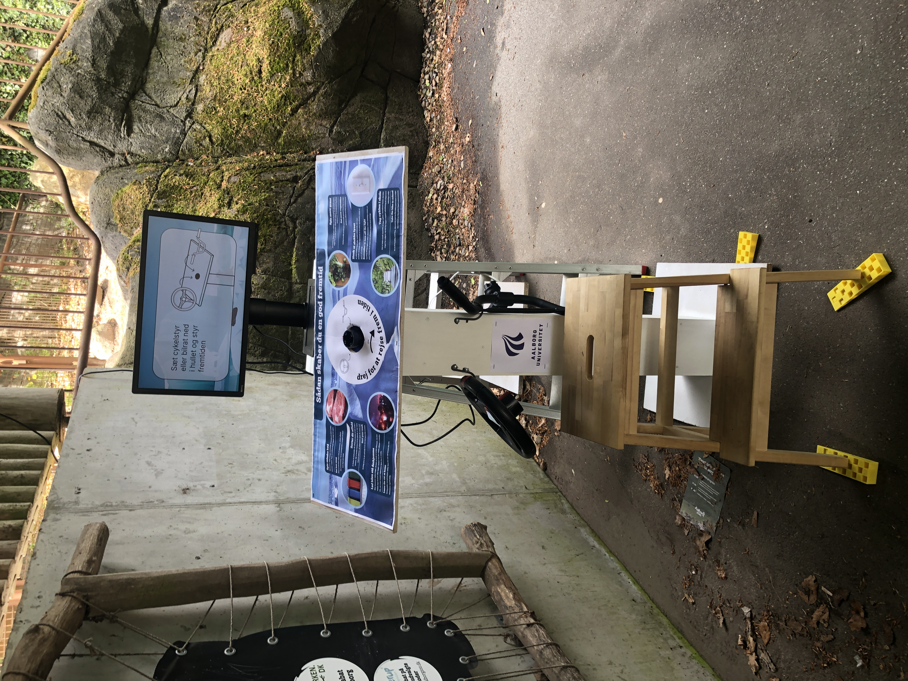

Steer the Future
As part of my master's degree, my group and I did this project in collaboration with Aalborg Zoo during spring 2022. The installation was located by the polar bear inclosure and was meant to educate children about climate change in a fun manner, but without stealing the attention from the polar bears. We developed a prototype based on data we gathered through workshops and interviews with children. The prototype was tested inside the zoo.
With Aalborg Zoo's wishes in mind, we created Steer the Future to prompt children and their parents to make changes in their household to minimise climate change. Placed next to the polar bears, children would be able to "steer the future" by choosing a handle and see how it affects the climate we animated demonstrating a polar environment. To encourage the families to engage in conversation about climate change, we also designed an accompanying poster with conversation prompts, as well as a guide to the product.
 The prototype for testing in Aalborg Zoo. The prototype consists of a screen, an info board, a toy steering wheel, and a children's bike handle.
Process
For GATHERING DATA in this project, we conducted semi-structured interviews with employees in Aalborg Zoo. Since their wishes were for us to design something that would teach children about climate change, this was what we had in mind when doing observations around the polar bear inclosure, as well as conducting interviews with the zoo guests. Later in the design process, we conducted further interviews with the zoo employees to get a deeper understanding of how they want to convey information.
We designed the PROTOTYPE to be very simple, as children are already met with the many impressions by the animals. The interaction itself consists of choosing either the steering wheel or the bike handle, symolising a "bad" and "good" future respectively. When turning the chosen steering object, a simplified animation will play corresponding to the direction that is steered in, which will be either back or forward in time - hence, "Steer the Future". Removing the steering object will activate an idle screen which will guide the user.
When TESTING this prototype, we used the Wizard of Oz method, as we saw this the most fit in this environment. The test took place right next to the polar bear inclosure. From the observed walking paths, we chose a spot that seemed to not take too much attention from the animals, while stilling getting enough attention for people to use it. We received positive feedback, and both the prototype itself, as well as the additional info board sparked conversation between children and their parents.